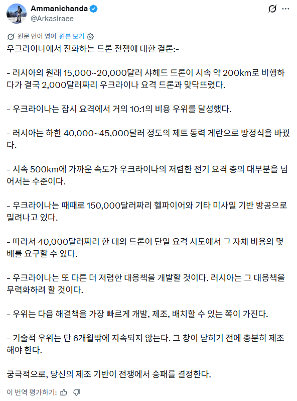

러시아가 200km/h 짜리들로 공격하다가 요격드론에 요격당하니까 500km/h 드론들로 교체함
이거 요격할 드론이 없어서 더 비싼 방공 미사일 체계 쓰는중

러시아가 200km/h 짜리들로 공격하다가 요격드론에 요격당하니까 500km/h 드론들로 교체함
이거 요격할 드론이 없어서 더 비싼 방공 미사일 체계 쓰는중
사람도 너무 많이 죽었음
걍 미래 갉아먹으면서 지속가능한 전쟁 하는중
양쪽 다 미래는 없을듯
근데 러시아 보면 땅덩어리가 ㅈㄴ 크고 기름이랑 가스가 나와서 생각보다 경제에 타격이 없더라 우리가 오일 하면 중동만 생각해서 글치 러시아가 세계 2~3위 산유국에 가스도 2위임.. 그밖에 니켈 금 구리 등등등 자원이 ㅈㄴ 많음
걍 미래가 없는거임, 20 30 청년들 다 뒤져가는데
미래가 없다기엔 자원빨 국토빨이 있어서 생각만큼 몰락하지는 않을거라는거 그리고 지구온난화 최대 수혜국이 러시아라서 미래가 어떻게 될지는 아무도 모름 지금도 북극항로 개척하겠다고 여러 나라들 나서고 있고 지금처럼 중동애들 걸핏하면 입구막기 시전하면 북극항로 개척하려는 나라들 많아질듯
당장 전쟁을 이기고 그런 소릴 해야지?
님은 SCV 없어도 커맨드센터랑 정제소만 지어놓으면 미네랄이랑 베스핀 가스가 알아서 걸어들어오는 줄 아나 보오
씹창나고 청년없는 러시아는 전통
그 자원을 밖에 내다팔거나 스스로 사용할수 있어야 의미가 있는거지, 지금은 정유시설 터지고 자원캘 인력 없어서 실시간으로 좆되고 있는중임
중동전쟁 여파 때문에 우크라이나가 방공무기가 바낙난걸 보고 방향을 틀어버린듯.
우크라이나 전투기도 미사일 아끼려고 발칸으로 드론 요격하는 수준임.
미사일로 수렴진화함
뭐든 빨리빨리 제조하는 역량이 중요하네
사람은 빨리 안 나오니까
결국 전쟁은 국력차이이지
붉은여왕 효과..?